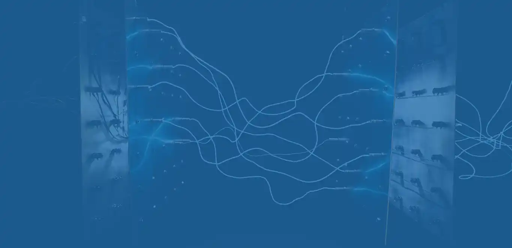

Batteri · UPS · nødstrøm
Strøm som ikke faller ut.
Aurskog Power AS har spesialisert seg på batterier, likestrømsanlegg og all form for UPS-backup for dataanlegg – og nødstrøm og reservekraft.
Hele landet primært ØstlandetKontroll og serviceBatteriretur
Lastprofil · anlegg24 t
LastUtfallReservekraft overtar
01 — Tjenester
Batteri, UPS og nødstrøm
Vi foretar kontroller, reparasjoner og nymontasje av alle typer batterianlegg.
- 01UPS-anleggVi skaffer UPS til de fleste formål – fra reserve til pc på kontoret til store anlegg i industrien.
- 02Stasjonære batterianleggAlt innen stasjonære batterianlegg til industri og kraftforsyning.
- 03Likerettere og vekselrettereLikeretteranlegg og vekselrettere til alle formål.
- 04Kontroll og serviceKontroll og ettersyn av batterier er viktig for driftssikkerheten – vi kjører ofte årlige kontroller.
- 05StrømaggregaterAggregater i de fleste størrelser, tilpasset behovet ditt.
- 06BatterireturVi tar hånd om brukte batterier på riktig måte.

02 — Hvorfor kontroll
Driftssikkerhet er vedlikehold
Et batterianlegg som ikke kontrolleres, er et anlegg du ikke vet om virker. Vi måler, dokumenterer og skifter det som må skiftes – før det blir et avbrudd.
- Årlig kontroll – måling og ettersyn etter avtale.
- Reparasjon – utbedring og utskifting ved behov.
- Nymontasje – nye anlegg, dimensjonert etter last.
03 — Prosessen
Fra behov til idriftsatt anlegg
Vi avklarer omfang og tid før vi starter, og du har én kontakt gjennom saken.
- Behov
Last, driftstid og hva som skal beskyttes.
- Dimensjonering
UPS, batteri eller aggregat – eller en kombinasjon.
- Montasje
Installasjon, tilkobling og testing.
- Kontroll
Årlig ettersyn og service.
«Kontroll og ettersyn av batterier er viktig med tanke på driftssikkerheten.»
Trenger anlegget kontroll – eller nytt utstyr?
Vi skaffer UPS, batterianlegg og aggregater, og tar service og kontroll på det du har.